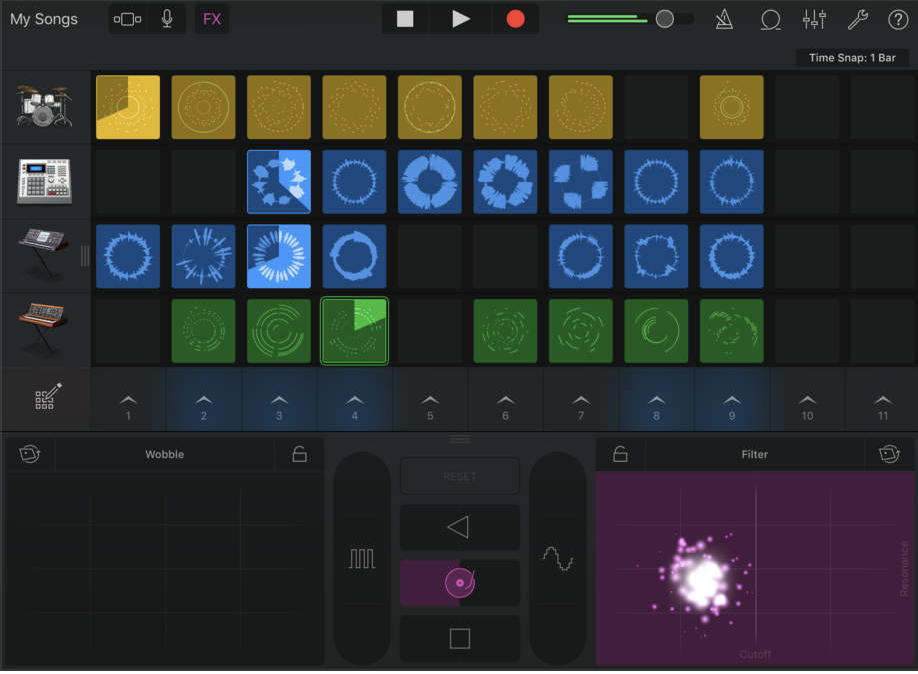
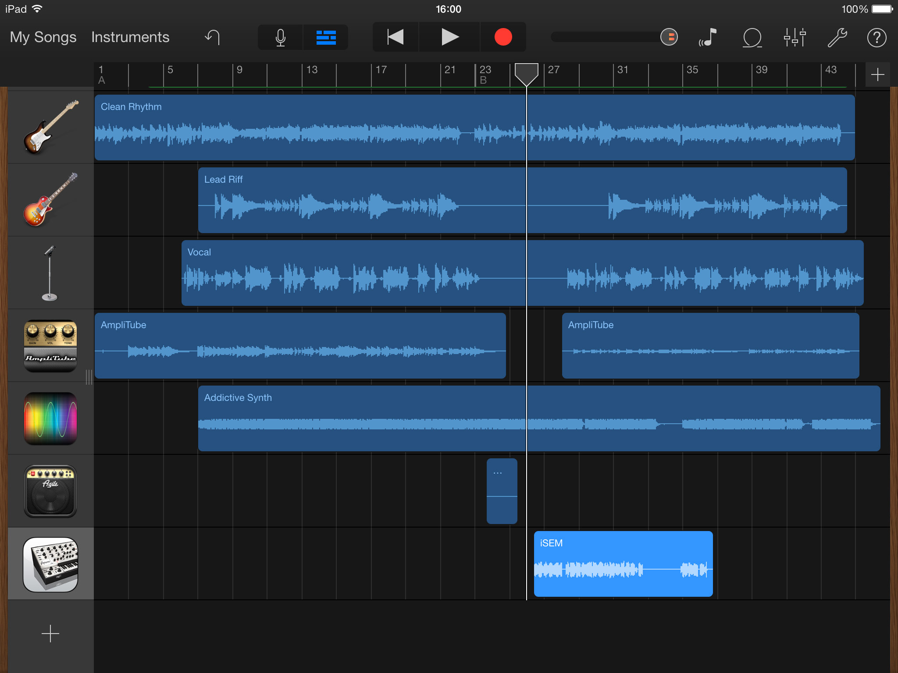
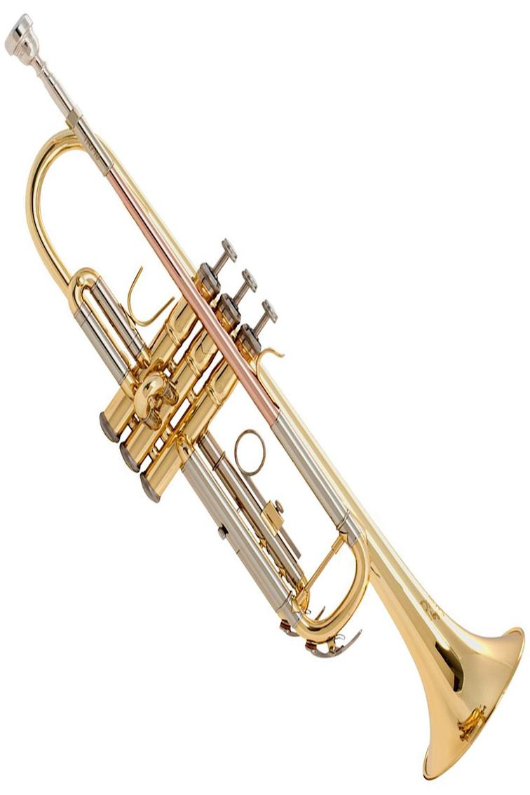

|
I make my music with garage band on my ipad and for most of it i don’t use live loops, so it almost entirely hand made. |
 |
|---|---|
|  |
My inspiration is the ease at which i can make nice sounding music from the knowledge i have of playing the trumpet for a few years. |
|
As i mentioned above i have been playing the trumpet for several years whitch gives me all the knowledge i need to make decent sound music. |
 |